Test Acceptance X-production Production
TAXP
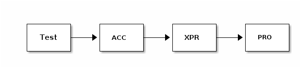
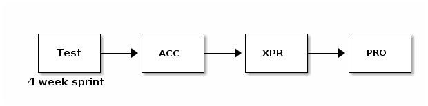
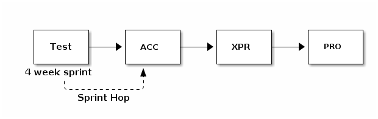
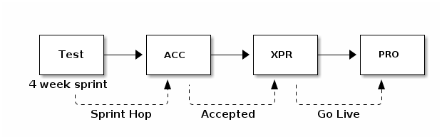
Sprinthop
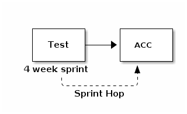
Ceremony, end-of-sprint
Monday, 0.9 release to ACC (RM)
Wednesday, @12:00
last automatic deploy (DPI)
limited manual deploy (teams)
Friday, @08:00+
close the sprint (DPI)
prepare DPL for next sprint (TAB)
1.0 release to ACC (RM)
Ceremony, start-of-sprint
Sunday, @08:00
prepare Jenkins for next sprint (DPI)
Monday/Tuesday,
prepare TEST environment (TAM)
open the sprint (DPI)
Jenkins
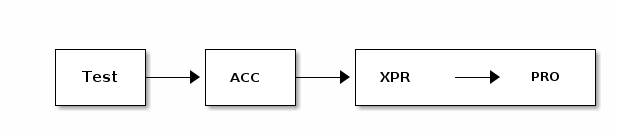
Stage per environment
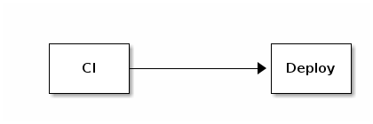
For TEST
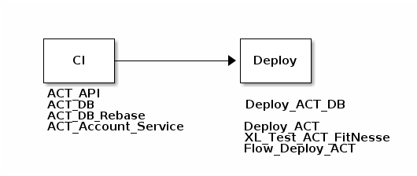
For TEST
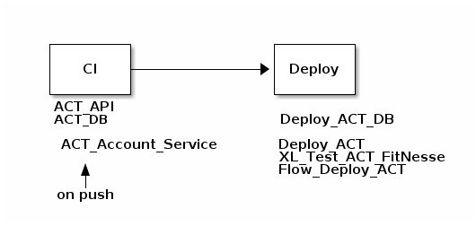
For TEST
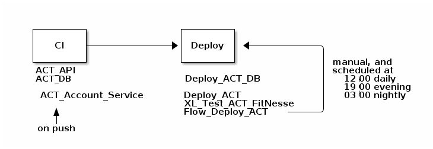
For Acc

For XprPro
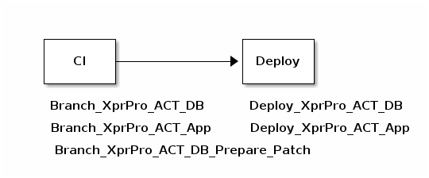
Pipeline
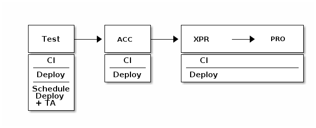
Thanks
Slides & samples
http://ikoodi.nl/talks
https://github.com/pvdissel/talks